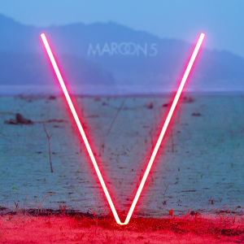
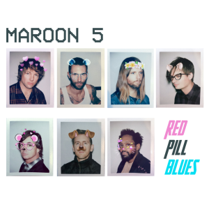

| Download |
Album |
Information |
Members |
Year |
Track List |
|
|

|
-
Grabación: Rumbo Recorders, Los Ángeles;
-
Géneros: Pop, Funk rock, Neo soul;
-
Duración: 45:57 minutos;
-
Discográfica: Octone Records
|
- Jesse Carmichael – Teclados
- Ryan Dusick – Batería, coros
- Adam Levine – Voz, Guitarra
- Mickey Madden – Bajo
- James Valentine – Guitarras
|
2002 |
- Harder to Breath
- This Love
- Shiver
- She will be Loved
- Tangled
- The Sun
- Must Get Out
- Sunday Morining
- Secret
- Through With You
- Not Coming Home
- Sweetest Goodbye
|
|
|

|
-
Géneros: Pop Rock, Funk rock;
-
Duración: 40:30 minutos;
-
Discográfica: A&M / Octone Records
|
- Adam Levine – Voz, Guitarra
- Jesse Carmichael – Teclado
- Mickey Madden – Bajo
- James Valentine – Coro, Guitarra
|
2007 |
- If I Never See Your Face Again
- Makes Me Wonder
- Little of Your Time" 2:17
- Wake Up Call
- Won't Go Home Without You
- Nothing Lasts Forever
- Can't Stop
- Goodnight Goodnight
- Not Falling Apart
- Kiwi
- Better That We Break
- Back at Your Door"
|
|
|

|
-
Grabación: Vevey, Suiza;
-
Géneros: Pop Rock;
-
Duración: 43:47 minutos;
-
Discográfica: A&M/Octone
|
- Jesse Carmichael – Teclados
- Ryan Dusick – Batería, coros
- Adam Levine – Voz, Guitarra
- Mickey Madden – Bajo
- James Valentine – Guitarras
|
2010 |
- Misery
- Give a Little More
- Stutter
- Don't Know Nothing
- Never Gonna Leave This Bed
- I Can't Lie
- Hands All Over
- How
- Get Back in My Life
- Just a Feeling
- Runaway
- Out of Goodbyes
- Moves Like Jagger
|
|
|

|
-
Grabación: Los Ángeles, California;
-
Géneros: Pop, Pop Rock;
-
Duración: 42:19 minutos;
-
Discográfica: A&M / Octone Records
|
- Jesse Carmichael – Teclados
- Ryan Dusick – Batería, coros
- Adam Levine – Voz, Guitarra
- Mickey Madden – Bajo
- James Valentine – Guitarras
|
2012 |
- One More Night
- Payphone
- Daylight
- Lucky Strike
- The Man Who Never Lied
- Love Somebody
- Lady Killer
- Fortune Teller
- Sad
- Tickets
- Doin'Dirt
- Beautiful Goodbye
|
|
|

|
-
Géneros: Pop, Pop Rock, Dance Pop, electro;
-
Duración: 41:17 minutos;
-
Discográfica: Interescope Records
|
- Jesse Carmichael – Teclados
- Ryan Dusick – Batería, coros
- Adam Levine – Voz, Guitarra
- Mickey Madden – Bajo
- James Valentine – Guitarras
|
2014 |
- Maps
- Animals
- It Was Always You
- Unkiss Me
- Sugar
- Leaving California
- In Your Pocket
- New Love
- Coming Back For You
- My Heart is Open
|
|
|

|
-
Grabación: Los Ángeles, California;
-
Géneros: Pop, Pop Rock, Funk, Soft Rock;
-
Duración: 42:09 minutos;
-
Discográfica: A&M / Octone Records
|
- Jesse Carmichael – Teclados
- Ryan Dusick – Batería, coros
- Adam Levine – Voz, Guitarra
- Mickey Madden – Bajo
- James Valentine – Guitarras
|
2017 |
- Best 4 U
- What Lovers Do
- Wait
- Lips On You
- Bet My Heart
- Help Me Out
- Who I Am
- Girls Like You
- Closure
|